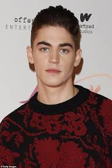
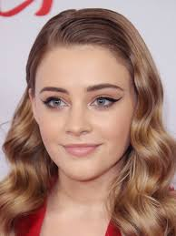
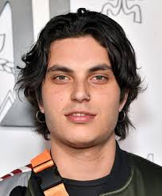

Hero Fiennes Tiffin

Who is Hero Fiennes Tiffin?
Hero Beauregard Faulkner Fiennes Tiffin is an English actor and film producer. He is most known for his starring roles in the After film series, for his portrayal of a young Tom Riddle in the film Harry Potter and the Half-Blood Prince and in the Young Sherlock series.
Josephine Langford

Who is Josephine Langford?
Josephine Eliza Langford is an Australian actress who rose to fame for her portrayal of Tessa Young in the After film series, based on Anna Todd's popular book series. The 2019 film's success, particularly with young adults, established Langford as a leading actress and fan favorite. Her chemistry with co-star Hero Fiennes Tiffin and her ability to portray complex characters were praised.
Shane Paul McGhie

Who is Shane Paul McGhie?
Shane Paul McGhie is an American actor known for his roles in film and television, including Deputy, Greenleaf, and Unbelievable. He graduated from the University of Southern California (USC) in 2016 with a BFA in Acting. McGhie has said he wants to create work that inspires people and sparks conversations.
Samuel Peter Acosta Larsen

Who is Samuel Peter Acosta Larsen ?
Samuel Peter Acosta Larsen is an American actor and singer. On August 21, 2011, Larsen won the reality competition program The Glee Project on the Oxygen network, which led to his having a recurring role as Joe Hart on the Fox television show Glee. Larsen was also a member of the band Bridges I Burn.